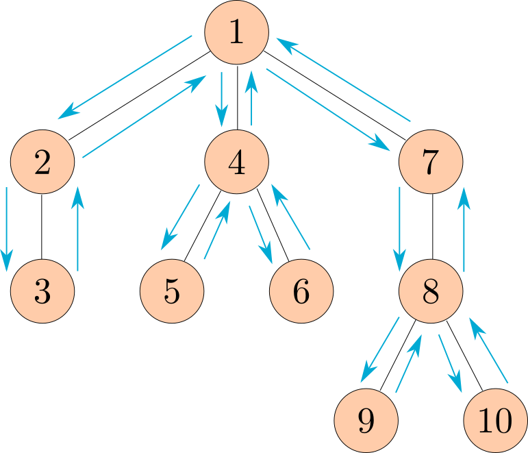

Homework 5 Solutions
Solution Files
You can find the solutions in hw05.py.
Required Questions
OOP
Q1: Vending Machine
In this question you'll create a vending machine that only outputs a single product and provides change when needed.
Create a class called VendingMachine that represents a vending
machine for some product. A VendingMachine object returns strings
describing its interactions.
Fill in the VendingMachine class, adding attributes and methods as
appropriate, such that its behavior matches the following doctests:
class VendingMachine:
"""A vending machine that vends some product for some price.
>>> v = VendingMachine('candy', 10)
>>> v.vend()
'Inventory empty. Restocking required.'
>>> v.add_funds(15)
'Inventory empty. Restocking required. Here is your $15.'
>>> v.restock(2)
'Current candy stock: 2'
>>> v.vend()
'You must add $10 more funds.'
>>> v.add_funds(7)
'Current balance: $7'
>>> v.vend()
'You must add $3 more funds.'
>>> v.add_funds(5)
'Current balance: $12'
>>> v.vend()
'Here is your candy and $2 change.'
>>> v.add_funds(10)
'Current balance: $10'
>>> v.vend()
'Here is your candy.'
>>> v.add_funds(15)
'Inventory empty. Restocking required. Here is your $15.'
>>> w = VendingMachine('soda', 2)
>>> w.restock(3)
'Current soda stock: 3'
>>> w.restock(3)
'Current soda stock: 6'
>>> w.add_funds(2)
'Current balance: $2'
>>> w.vend()
'Here is your soda.'
"""
def __init__(self, product, price):
self.product = product
self.price = price
self.stock = 0
self.balance = 0
def restock(self, n):
self.stock += n
return f'Current {self.product} stock: {self.stock}'
def add_funds(self, n):
if self.stock == 0:
return f'Inventory empty. Restocking required. Here is your ${n}.'
self.balance += n
return f'Current balance: ${self.balance}'
def vend(self):
if self.stock == 0:
return 'Inventory empty. Restocking required.'
difference = self.price - self.balance
if difference > 0:
return f'You must add ${difference} more funds.'
message = f'Here is your {self.product}'
if difference != 0:
message += f' and ${-difference} change'
self.balance = 0
self.stock -= 1
return message + '.'You may find Python's formatted string literals, or f-strings useful. A quick example:
>>> feeling = 'love'
>>> course = '61A!'
>>> f'I {feeling} {course}'
'I love 61A!'Use Ok to test your code:
python3 ok -q VendingMachineIf you're curious about alternate methods of string formatting, you can also check out an older method of Python string formatting. A quick example:
>>> ten, twenty, thirty = 10, 'twenty', [30]
>>> '{0} plus {1} is {2}'.format(ten, twenty, thirty)
'10 plus twenty is [30]'Reading through the doctests, it should be clear which functions we should add to ensure that the vending machine class behaves correctly.
__init__
- This can be difficult to fill out at first. Both
productandpriceseem pretty obvious to keep around, butstockandbalanceare quantities that are needed only after attempting other functions.
restock
- Even though
v.restock(2)takes only one argument in the doctest, remember thatselfis bound to the object therestockmethod is invoked on. Therefore, this function has two parameters. - While implementing this function, you will probably realize that you would
like to keep track of the stock somewhere. While it might be possible to set
the stock in this function as an instance attribute, it would lose whatever
the old stock was.
Therefore, the natural solution is to initialize stock in the constructor, and
then update it in
restock.
add_funds
- This behaves very similarly to
restock. See comments above. - Also yes, this is quite the expensive vending machine.
vend
The trickiest thing here is to make sure we handle all the cases. You may find it helpful when implementing a problem like this to keep track of all the errors we run into in the doctest.
- No stock
- Not enough balance
- Leftover balance after purchase (return change to customer)
- No leftover balance after purchase
We use some string concatenation at the end when handling case 3 and 4 to try and reduce the amount of code. This isn't necessary for correctness -- it's ok to have something like:
if difference != 0: return ... else: return ...Of course, that would require decrementing the balance and stock beforehand.
Video walkthrough: https://youtu.be/7A8WtnX89z4
Linked Lists
Q2: Store Digits
Write a function store_digits that takes in an integer n and returns
a linked list where each element of the list is a digit of n.
Note: do not use any string manipulation functions like
strandreversed
def store_digits(n):
"""Stores the digits of a positive number n in a linked list.
>>> s = store_digits(1)
>>> s
Link(1)
>>> store_digits(2345)
Link(2, Link(3, Link(4, Link(5))))
>>> store_digits(876)
Link(8, Link(7, Link(6)))
>>> # a check for restricted functions
>>> import inspect, re
>>> cleaned = re.sub(r"#.*\\n", '', re.sub(r'"{3}[\s\S]*?"{3}', '', inspect.getsource(store_digits)))
>>> print("Do not use str or reversed!") if any([r in cleaned for r in ["str", "reversed"]]) else None
"""
result = Link.empty
while n > 0:
result = Link(n % 10, result)
n //= 10
return resultUse Ok to test your code:
python3 ok -q store_digitsTrees
Q3: Yield Paths
Define a generator function path_yielder which takes in a Tree t, a value
value, and returns a generator object which yields each path from the root of t
to a node that has label value.
t is implemented with a class, not as the function-based ADT.
Each path should be represented as a list of the labels along that path in the tree. You may yield the paths in any order.
We have provided a (partial) skeleton for you. You do not need to use this skeleton, but if your implementation diverges significantly from it, you might want to think about how you can get it to fit the skeleton.
def path_yielder(t, value):
"""Yields all possible paths from the root of t to a node with the label value
as a list.
>>> t1 = Tree(1, [Tree(2, [Tree(3), Tree(4, [Tree(6)]), Tree(5)]), Tree(5)])
>>> print(t1)
1
2
3
4
6
5
5
>>> next(path_yielder(t1, 6))
[1, 2, 4, 6]
>>> path_to_5 = path_yielder(t1, 5)
>>> sorted(list(path_to_5))
[[1, 2, 5], [1, 5]]
>>> t2 = Tree(0, [Tree(2, [t1])])
>>> print(t2)
0
2
1
2
3
4
6
5
5
>>> path_to_2 = path_yielder(t2, 2)
>>> sorted(list(path_to_2))
[[0, 2], [0, 2, 1, 2]]
"""
if t.label == value:
yield [value]
for b in t.branches: for path in path_yielder(b, value):
yield [t.label] + pathHint: If you're having trouble getting started, think about how you'd approach this problem if it wasn't a generator function. What would your recursive calls be? With a generator function, what happens if you make a "recursive call" within its body?
Use Ok to test your code:
python3 ok -q path_yielderIf our current label is equal to value, we've found a path from the root to a node
containing value containing only our current label, so we should yield that. From there,
we'll see if there are any paths starting from one of our branches that ends at a
node containing value. If we find these "partial paths" we can simply add our current
label to the beinning of a path to obtain a path starting from the root.
In order to do this, we'll create a generator for each of the branches which yields
these "partial paths". By calling path_yielder on each of the branches, we'll create
exactly this generator! Then, since a generator is also an iterable, we can iterate over
the paths in this generator and yield the result of concatenating it with our current label.
Extra Questions
OOP
Q4: Mint
A mint is a place where coins are made. In this question, you'll implement a Mint class that can output a Coin with the correct year and worth.
- Each
Mintinstance has ayearstamp. Theupdatemethod sets theyearstamp to thecurrent_yearclass attribute of theMintclass. - The
createmethod takes a subclass ofCoinand returns an instance of that class stamped with themint's year (which may be different fromMint.current_yearif it has not been updated.) - A
Coin'sworthmethod returns thecentsvalue of the coin plus one extra cent for each year of age beyond 50. A coin's age can be determined by subtracting the coin's year from thecurrent_yearclass attribute of theMintclass.
class Mint:
"""A mint creates coins by stamping on years.
The update method sets the mint's stamp to Mint.current_year.
>>> mint = Mint()
>>> mint.year
2020
>>> dime = mint.create(Dime)
>>> dime.year
2020
>>> Mint.current_year = 2100 # Time passes
>>> nickel = mint.create(Nickel)
>>> nickel.year # The mint has not updated its stamp yet
2020
>>> nickel.worth() # 5 cents + (80 - 50 years)
35
>>> mint.update() # The mint's year is updated to 2100
>>> Mint.current_year = 2175 # More time passes
>>> mint.create(Dime).worth() # 10 cents + (75 - 50 years)
35
>>> Mint().create(Dime).worth() # A new mint has the current year
10
>>> dime.worth() # 10 cents + (155 - 50 years)
115
>>> Dime.cents = 20 # Upgrade all dimes!
>>> dime.worth() # 20 cents + (155 - 50 years)
125
"""
current_year = 2020
def __init__(self):
self.update()
def create(self, kind):
return kind(self.year)
def update(self):
self.year = Mint.current_year
class Coin:
def __init__(self, year):
self.year = year
def worth(self):
return self.cents + max(0, Mint.current_year - self.year - 50)
class Nickel(Coin):
cents = 5
class Dime(Coin):
cents = 10Use Ok to test your code:
python3 ok -q MintGenerators/Trees
Q5: Is BST
Write a function is_bst, which takes a Tree t and returns True if, and
only if, t is a valid binary search tree, which means that:
- Each node has at most two children (a leaf is automatically a valid binary search tree)
- The children are valid binary search trees
- For every node, the entries in that node's left child are less than or equal to the label of the node
- For every node, the entries in that node's right child are greater than the label of the node
An example of a BST is:

Note that, if a node has only one child, that child could be considered either the left or right child. You should take this into consideration.
Hint: It may be helpful to write helper functions bst_min and bst_max that
return the minimum and maximum, respectively, of a Tree if it is a valid binary
search tree.
def is_bst(t):
"""Returns True if the Tree t has the structure of a valid BST.
>>> t1 = Tree(6, [Tree(2, [Tree(1), Tree(4)]), Tree(7, [Tree(7), Tree(8)])])
>>> is_bst(t1)
True
>>> t2 = Tree(8, [Tree(2, [Tree(9), Tree(1)]), Tree(3, [Tree(6)]), Tree(5)])
>>> is_bst(t2)
False
>>> t3 = Tree(6, [Tree(2, [Tree(4), Tree(1)]), Tree(7, [Tree(7), Tree(8)])])
>>> is_bst(t3)
False
>>> t4 = Tree(1, [Tree(2, [Tree(3, [Tree(4)])])])
>>> is_bst(t4)
True
>>> t5 = Tree(1, [Tree(0, [Tree(-1, [Tree(-2)])])])
>>> is_bst(t5)
True
>>> t6 = Tree(1, [Tree(4, [Tree(2, [Tree(3)])])])
>>> is_bst(t6)
True
>>> t7 = Tree(2, [Tree(1, [Tree(5)]), Tree(4)])
>>> is_bst(t7)
False
"""
def bst_min(t):
"""Returns the min of t, if t has the structure of a valid BST."""
if t.is_leaf():
return t.label
return min(t.label, bst_min(t.branches[0]))
def bst_max(t):
"""Returns the max of t, if t has the structure of a valid BST."""
if t.is_leaf():
return t.label
return max(t.label, bst_max(t.branches[-1]))
if t.is_leaf():
return True
if len(t.branches) == 1:
c = t.branches[0]
return is_bst(c) and (bst_max(c) <= t.label or bst_min(c) > t.label)
elif len(t.branches) == 2:
c1, c2 = t.branches
valid_branches = is_bst(c1) and is_bst(c2)
return valid_branches and bst_max(c1) <= t.label and bst_min(c2) > t.label
else:
return FalseUse Ok to test your code:
python3 ok -q is_bstQ6: Preorder
Define the function preorder, which takes in a tree as an argument and
returns a list of all the entries in the tree in the order that
print_tree would print them.
The following diagram shows the order that the nodes would get printed, with the arrows representing function calls.

Note: This ordering of the nodes in a tree is called a preorder traversal.
def preorder(t):
"""Return a list of the entries in this tree in the order that they
would be visited by a preorder traversal (see problem description).
>>> numbers = Tree(1, [Tree(2), Tree(3, [Tree(4), Tree(5)]), Tree(6, [Tree(7)])])
>>> preorder(numbers)
[1, 2, 3, 4, 5, 6, 7]
>>> preorder(Tree(2, [Tree(4, [Tree(6)])]))
[2, 4, 6]
"""
if t.branches == []:
return [t.label]
flattened_children = []
for child in t.branches:
flattened_children += preorder(child)
return [t.label] + flattened_children
# Alternate solution
from functools import reduce
def preorder_alt(t):
return reduce(add, [preorder(child) for child in t.branches], [t.label])Use Ok to test your code:
python3 ok -q preorderQ7: Generate Preorder
Similarly to preorder in Question 3, define the function generate_preorder, which takes in a tree as an argument and
now instead yields the entries in the tree in the order that
print_tree would print them.
Hint: How can you modify your implementation of
preordertoyield fromyour recursive calls instead of returning them?
"""Yield the entries in this tree in the order that they
would be visited by a preorder traversal (see problem description).
>>> numbers = Tree(1, [Tree(2), Tree(3, [Tree(4), Tree(5)]), Tree(6, [Tree(7)])])
>>> gen = generate_preorder(numbers)
>>> next(gen)
1
>>> list(gen)
[2, 3, 4, 5, 6, 7]
"""
yield t.label
for b in t.branches:
yield from generate_preorder(b)Use Ok to test your code:
python3 ok -q generate_preorder